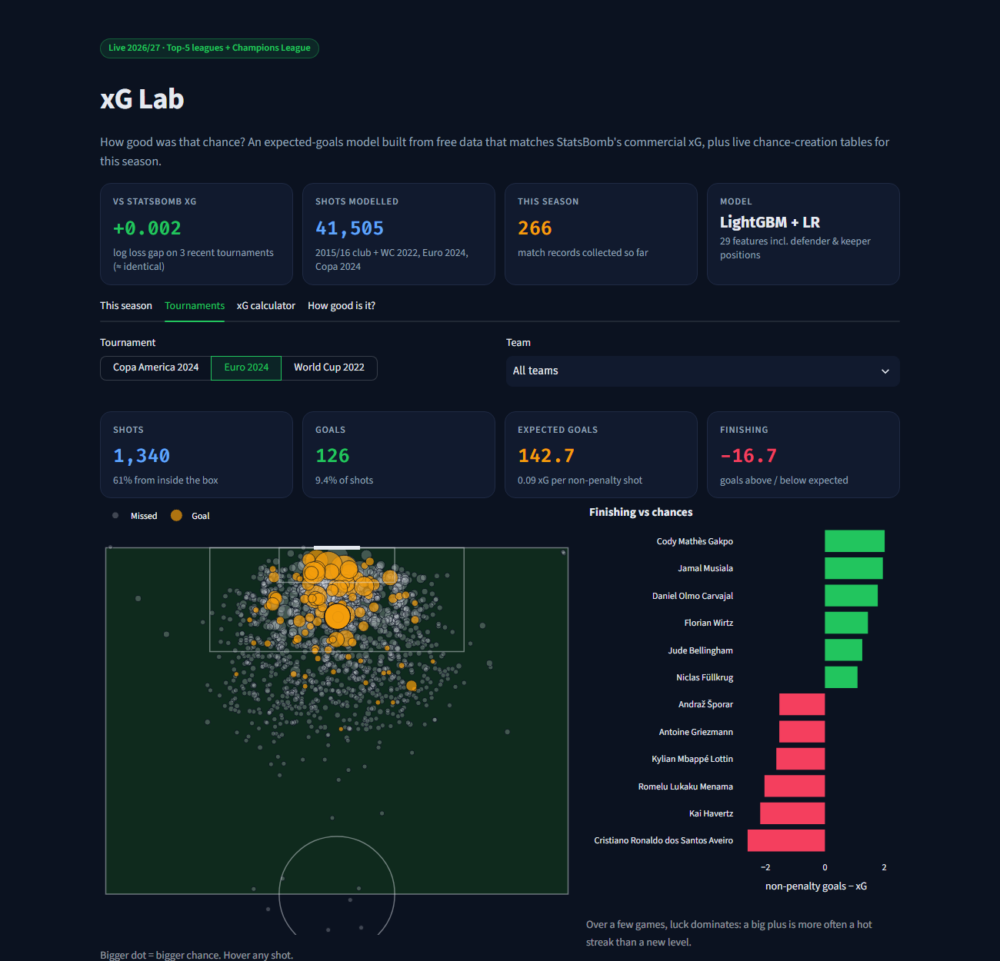

I like coming up with product ideas, and I like working out how to build the ones my team brings me.
The part I enjoy most is the start: someone has a one-line idea, and I find a version of it that can be built quickly and
still holds up once people use it. Every AI feature I ship has an evaluation, a fallback, and a person in the loop where it matters.
A working proof of concept in under two weeks: Shari'ah screening, contract checks, and AI assistants that can only act through an audited policy layer.
Brief from a client
"A WhatsApp assistant our team can rely on."
Designed and built on my own, with separate data per customer, owner approval before it changes anything, and backups tested by restoring them.
My own idea
An AI agent that tests our products.
It writes and repairs end-to-end tests from plain English. I used it to audit a company platform before release.
Work
Aug 2026 – now
AI Full-Stack Engineer
Digitech Evoqe, sister company of ZaryahX
Still a core engineer on ZaryahPlus. Rebuilt marriage matching to spec, shipped community gatherings end to end, and extended the Finance module.
Built an Islamic finance intelligence platform inside ZaryahPlus, where AI assistants act only through an OPA/Rego policy gateway that logs every action.
Built a multi-tenant WhatsApp AI assistant for a client, alone and end to end.
Build small domain language models for regulated fields: retrieval, fine-tuning, model-graded evaluation, and an automatic release check.
Built the server core of an on-premise multi-agent coordinator, added retrieval-based agent features to an education product, and led an AI-assisted QA and security review.
May – Jul 2026
AI Intern
ZaryahX, on ZaryahPlus
Built the Telegram assistant end to end. Replies from Raya, the app's AI companion, stream into chats; groups can assign tasks with reminders; it understands voice notes and documents. I also audited it and closed a critical token leak.
Built the Finance module end to end: a Shari'ah-compliant stock screener, live prices and charts, and a portfolio simulator that refuses anything it can't verify as compliant.
Tightened the product's AI safety: output moderation, jailbreak fixes, Arabic and Urdu script handling, and crisis helplines by country.
Jun – Jul 2025
Full-Stack Intern
Ifelse Techsmart Solutions
Built most of the core features of the OnfraBizo web app in React and Node.js.
Aug 2023 – Jan 2024
Machine Learning Intern
Brighter India
Worked on generative AI tools, and came second in the BrighterIndia Hackathon.
A bot that manages my Fantasy Premier League team. It predicts every player's points, plans transfers, captain and chips
four weeks ahead, and messages me on Telegram before each deadline. It runs every hour on GitHub Actions.
Decisions along the way
Two models instead of one. One predicts whether a player plays, the other how many points he scores if he does.
Found a leak in a popular dataset. Its "expected points" column was recorded after the matches, so I only compare against it on clean 2025/26 data.
Cheap check first. A small script runs hourly and only starts the full pipeline when a deadline is close.
No password stored. It reads my real team from a screenshot instead of logging in to FPL.
Code on request

Python · LightGBM · Streamlit · GitHub Actions
Football xG Lab and Scout
An expected-goals model trained only on free StatsBomb data. On World Cup 2022, Euro 2024 and Copa América 2024 it performs
as well as StatsBomb's commercial model. Scout finds players with a similar statistical profile across Europe's top leagues.
Decisions along the way
Split by match. Shots from one game never appear in both training and test data.
Used freeze frames. The model sees where every player stood when the shot was taken.
Careful wording. A paired bootstrap shows the gap to StatsBomb isn't significant, so I say the models are level.
Medical imaging in RSNA knee abnormality detection, a card-game AI in the Pokémon TCG AI Battle, and LLM agents that play
interactive reasoning games in ARC-AGI-3.
Decisions along the way
Batched every game decision into one GPU call, which made self-play training about six times faster.
One change per submission, written down before running, so I always know what moved the score.
Read the top 50 solutions after RSNA closed to see what I missed.
Agents that plan, write and fix end-to-end tests from plain-English descriptions. Once a test is stable it becomes a fixed
Playwright spec, because CI needs tests that behave the same way every run.
Python · Whisper · ffmpeg · Claude · Netlify
Sovereign AI notes
Study notes for Sequoia's six-talk series on sovereign AI. A script downloads each talk, pulls out the slides, transcribes the
audio and writes illustrated notes, published as a small static site.